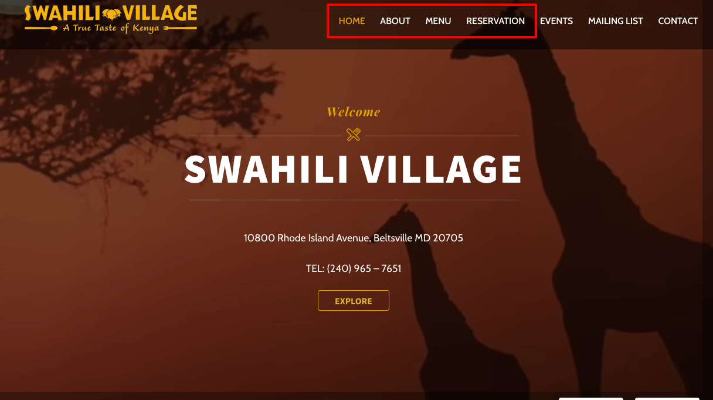
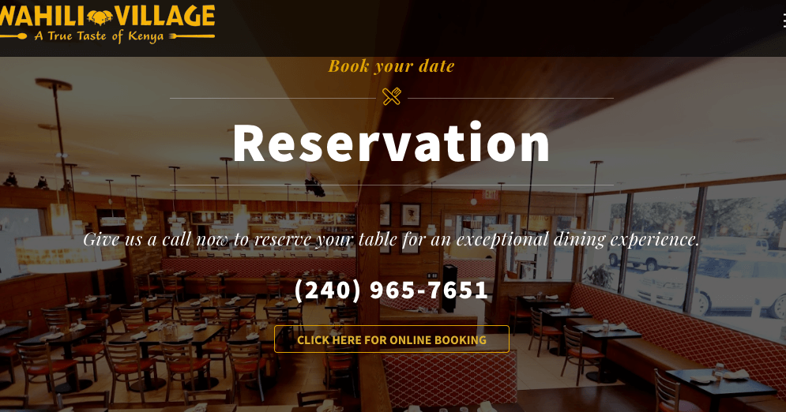
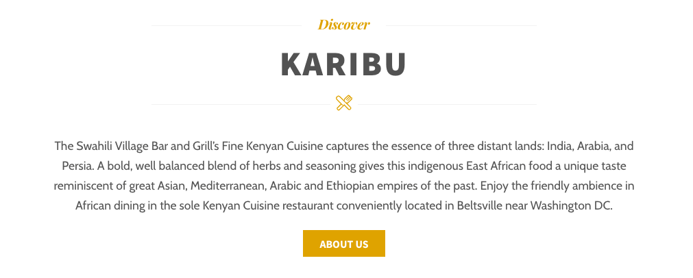
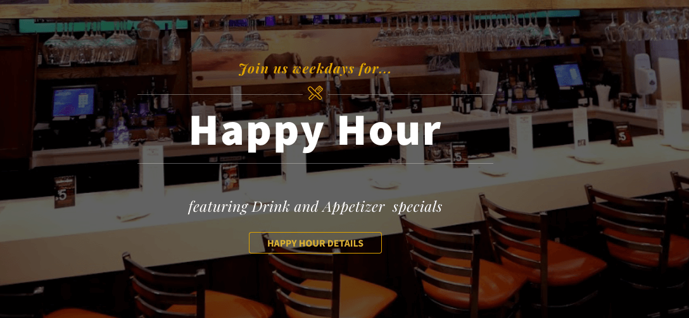
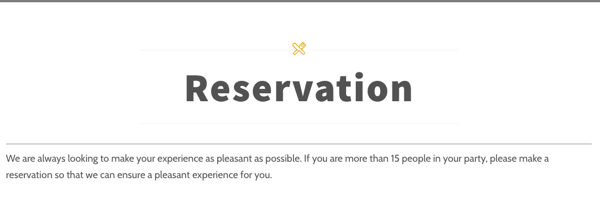

Purpose and Scope
A few years ago, I was visiting a couple of friends in Maryland and they recommended we go to eat at Swahili Village restaurant and since this was a large group of us, we settled on making a reservation, but the website left us puzzled so we decided to call them and reserved a table. We thought maybe having a working page would have made life easier.
 swahilivillage.com HomepageAfter reading Steve Krug's book on usability, I decided to test out their website. I recruited three participants and gave them specific tasks to complete with a few follow up questions and documented the results. The test mainly focused on user-experience navigating the website to complete a specific task, functionalities (links, buttons, drop-down menu), website content, and design flows.
Participants
I recruited three participants; age range was from 20 years to 35 years.
- Tester 1: Male Software Engineer with bachelor’s degree.
- Tester 2: Male Customer Service Agent with an AA degree.
- Tester 3: Female Program Manager with a bachelor’s degree.
Schedule & Location
I contacted three participants via text message for a one on one meeting at LLMLC , between 9AM and 12PM. The first participant started schedule at 9AM, second participant 10AM and the last participant at 12PM. Each test lasted about 30 minutes, with 15 minutes explaining them what the test is going to cover and the other 15 minutes were allocated to the test.
Equipment
Equipment used was a MacBook Pro 13 in, Windows desktop and iPhone 8 Plus to record and collect data. Three different browsers (Google Chrome, Firefox, Safari) were also used thoughtout this test.
Scenarios
I asked the participants to complete four tasks and a few probing questions:
- Make an online reservation
- Cuisine influence or background
- Find the food menu and happy hour specials
The pictures below are the screen shots of the home page with clickable buttons that meant to lead to the home page links.
 swahilivillage.com Reservation Homepage  swahilivillage.com About page  swahilivillage.com Happy Hour pageThese scenarios were straight forward, but as we will see in the test results, not all tasks were completed. In fact, some testers reported being confused by some of the features and content on the website.
Summary Test Results
 Tester one summary
Tester two summary
Tester one summary
Tester two summary
 Tester three summary
Tester three summary
For metrics and test script please visit this page.
After the all three participants completed their test, I asked them to rate their top three usability problems:
- Confusing reservation page
- Confusing drop-down menu functionality
- Make the happy hour info clear preferably on the menu page
- Doesn’t understand the about page
- Did not like the video on the homepage, they thought it was loud with no option to mute it.
Findings and Recommendantions
Based on the usability test results, all three participants spent a significant amount of time trying to figure out how to make an online reservation. Testers one and two left the reservation page and went straight to the contact form to find a phone number.
 swahilivillage.com Reservation pageTester one and two also failed to find happy hour information. Tester one did eventually go back to the homepage and was able to locate the happy hour card. Tester three remembered seeing that information on the homepage, and he also found the video on the homepage annoying. All three participants located the food menu and the cuisine background right away. They referred to Kenya which is listed in the navigation bar.
As for recommendations, participants agreed on adding the happy hour information to the food menu and removing the drop-down menu since it had no actual functionality. They also recommended removing the reservation page and adding it to the contact form with an option to reserve online. They also suggested making the about page shorter and clear content.
Conclusion
After analyzing the testers results and performance, I think some pages are just plain confusing. I would implement what the testers suggested and make a few changes to the website. Most of the information is listed on the website, it is just a matter of re-designing a pages and making the content more clear.